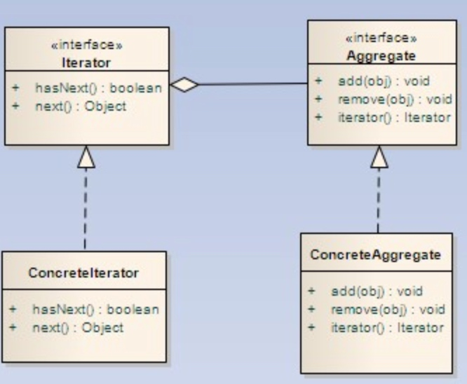
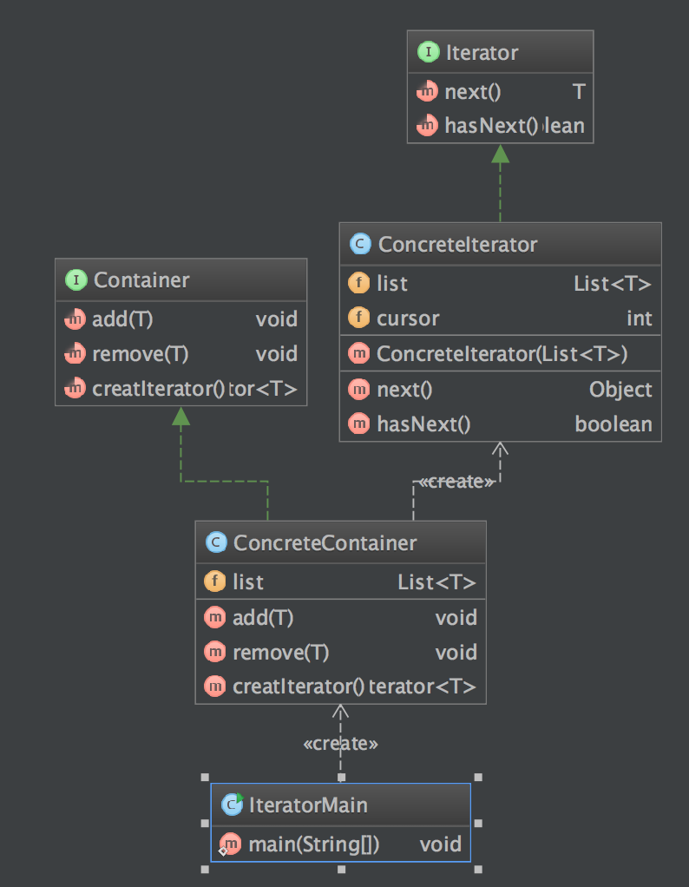

定义
迭代器模式 Iterator Pattern 提供一个方法顺序访问一个聚合对象中的个个元素，而不是暴露其内部的表示
使用场景
- 访问一个聚合对象的内容而无须暴露它的内部表示。
- 需要为聚合对象提供多种遍历方式。
- 为遍历不同的聚合结构提供一个统一的接口。
## UML 图 
迭代器角色(Iterator)：迭代器角色负责定义访问和遍历元素的接口。
具体迭代器角色(Concrete Iterator)：具体迭代器角色要实现迭代器接口，并要记录遍历中的当前位置。
容器角色(Container)：容器角色负责提供创建具体迭代器角色的接口。
具体容器角色(Concrete Container)：具体容器角色实现创建具体迭代器角色的接口。这个具体迭代器角色与该容器的结构相关。
简单实现
步骤
- 创建产品抽象类
- 创建产品族
- 创建抽象工厂方法，返回产品族
- 创建具体抽象方法
- 客户端调用
例子
public interface Iterator<T> {
T next();
boolean hasNext();
}
public class ConcreteIterator<T> implements Iterator {
private List<T> list = new ArrayList<T>();
private int cursor = 0;
public ConcreteIterator(List<T> list) {
this.list = list;
}
@Override
public Object next() {
T obj = null;
if (this.hasNext()) {
obj = this.list.get(cursor++);
}
return obj;
}
@Override
public boolean hasNext() {
if (cursor == list.size()) {
return false;
}
return true;
}
}
public interface Container<T> {
void add(T obj);
void remove(T obj);
Iterator<T> creatIterator();
}
public class ConcreteContainer<T> implements Container<T> {
private List<T> list = new ArrayList<T>();
@Override
public void add(T obj) {
list.add(obj);
}
@Override
public void remove(T obj) {
list.remove(obj);
}
@Override
public Iterator<T> creatIterator() {
return new ConcreteIterator<T>(list);
}
}
客户端调用
public class IteratorMain {
public static void main(String[] args) {
System.out.println("IteratorMain RUN");
ConcreteContainer concreteContainer = new ConcreteContainer<String>();
concreteContainer.add("one");
concreteContainer.add("two");
concreteContainer.add("three");
Iterator<String> iterator = concreteContainer.creatIterator();
while (iterator.hasNext()) {
String string = iterator.next();
System.out.println(string);
}
}
}
结果
IteratorMain RUN
one
two
three
类图

优缺点
- 优点
- 它支持以不同的方式遍历一个聚合对象。
- 迭代器简化了聚合类。
- 在同一个聚合上可以有多个遍历。
- 在迭代器模式中，增加新的聚合类和迭代器类都很方便，无须修改原有代码。
- 缺点
- 由于迭代器模式将存储数据和遍历数据的职责分离，增加新的聚合类需要对应增加新的迭代器类，类的个数成对增加，这在一定程度上增加了系统的复杂性
## 总结
- 由于迭代器模式将存储数据和遍历数据的职责分离，增加新的聚合类需要对应增加新的迭代器类，类的个数成对增加，这在一定程度上增加了系统的复杂性
- 迭代器模式提供一种方法来访问聚合对象，而不用暴露这个对象的内部表示。
- 将遍历聚合对象中数据的行为提取出来，封装到一个迭代器中，通过专门的迭代器来遍历聚合对象的内部数据，这就是迭代器模式的本质。迭代器模式是“单一职责原则”的完美体现。
- 当使用迭代器的时候，我们依赖聚合提供遍历。
- 迭代器提供了一个通用的接口，让我们遍历聚合的项，放我们编码使用聚合项时，就可以使用多态机制。
参考
http://www.cnblogs.com/chenssy/p/3250409.html
http://tianli.blog.51cto.com/190322/37644/
https://sourcemaking.com/design_patterns/iterator
『head first 设计模式』